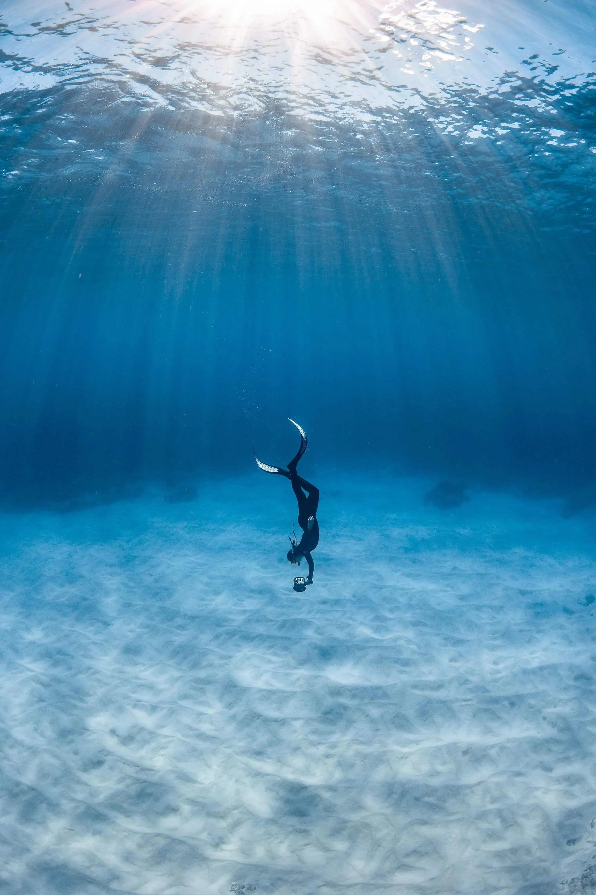

Life On Land
Villa base, private chef and one night under the stars
The safari is based from a modern marina-front villa in Exmouth, with shared meals and a house rhythm that makes the group feel like a small expedition team rather than separate travellers.
Meals are prepared by a private chef, with vegetarian breakfasts, lunches and dinners listed in the trip materials, plus snacks, mineral water and non-alcoholic drinks throughout the week.
The Coral Bay section includes a cultural camping experience near Cardabia Station, with a night under canvas swags by the water, Nyinggulu stories shared by a traditional owner and time for Milky Way photography.
